사회조사분석사-2급 (2008-07-27 기출문제)
1과목: 조사방법론 I
1. 실험설계의 인과관계 분석을 위협하는 요소들이 아닌 것은?
- 검사효과
- 사후검사
- 실험대상의 탈락
- 성숙 또는 시간의 경과
(정답률: 70%)

2. 질문의 문항배열에서 앞의 문항과 응답내용이 뒤의 문항과 응답내용에 영향을 미치는 것을 무엇이라고 하는가?
- 성숙효과
- 이전효과
- 응답오류효과
- 검정효과
(정답률: 81%)
3. 다음 중 어느 대학생 개인의 특성에 기초하여 소속 대학교 학생집단의 전체 특성으로 규정하려는 분석상의 오류는?
- 환원주의 오류
- 생태학적 오류
- 개인주의적 오류
- 외적 타당성 오류
(정답률: 59%)
4. 다음 중 연구유형에 대한 설명으로 옳지 않은 것은?
- 순수연구 - 이론을 구성하거나 경험적 자료를 토대로 이론을 검증하는 연구
- 평가연구 - 응용연구의 특수형태로 진행중인 프로그램의 의도한 효과를 가져왔는가를 평가하는 연구
- 탐색적 연구 - 선행연구가 빈약하여 조사연구를 통해 연구해야 할 속성을 개념화하는 연구
- 기술적 연구 - 축적된 자료를 토대로 특정된 사실관계를 파악하여 미래를 예측하는 연구
(정답률: 57%)
5. 패널조사의 단점에 대한 설명으로 틀린 것은?
- 원조사대상이 이사를 하거나 사망하여 패널소멸이 일어날 경우 연구결과가 왜곡될 수 있다.
- 반복되는 조사를 통하여 응답자가 조사의 의도를 파악하여 연구결과가 왜곡될 수 있다.
- 장기간의 조사과정으로 조사자와 친밀해져서 부정확한 자료를 제공할 수 있다.
- 다른 조사방법에 비해 변화를 감지할 수 있는 가능성은 비교적 낮다.
(정답률: 68%)
6. 질문지 개별 항목의 내용을 결정할 때 꼭 고려하지 않아도 되는 것은?
- 응답자가 정보를 제공해 줄 수 있는가
- 응답자가 필요한 정보를 알고 있는가
- 한 문항으로 충분한가
- 잘래 주요 관심사로 예상되는 내용인가
(정답률: 64%)
7. 우편조사의 응답률에 영향을 미치는 요인에 대한 설명으로 틀린 것은?
- 대상자의 범위가 극히 제한된 동질집단의 경우 회수율이 낮다.
- 질문지의 양식이나 우송방법에 따라 다를 수 있다.
- 응답에 대한 동기부여가 중요하다.
- 연구주관기관과 지원단체의 성격이 중요하다.
(정답률: 59%)
8. 사회과학적 연구방법 중 귀납적 접근방법에 대한 설명으로 틀린 것은?
- 관찰을 통해 현상을 파악한다.
- 개별사례를 바탕으로 일반적 유형을 찾아낸다.
- 탐색적 방법에 주로 이용된다.
- 이론 또는 모형 설정 후 연구를 시작한다.
(정답률: 55%)
9. 다음 중 질문항목의 배열순서에 대한 설명으로 틀린 것은?
- 간단한 내용의 질문이라도 응답자들이 응답하기를 주저하는 내용의 질문은 조사표의 말미로 미루어야 한다.
- 부담감 없이 쉽사리 응답할 수 있는 단순한 내용의 질문은 복잡한 내용의 질문보다 먼저 제시되어야 한다.
- 응답자들의 관심을 끌 수 있는 일반적인 내용의 질문은 항상 조사표의 제일 앞 부분에 제시되어야 한다.
- 비록 응답자들이 응답을 회피하는 항목이라도 개인의 사생활에 관련된 기본 항목은 가능한 한 면접의 서두에서 다루어지는 것이 효과적이다.
(정답률: 78%)
10. 다음 중 가설의 특성에 대한 설명으로 틀린 것은?
- 가설은 검증될 수 있어야 한다.
- 가설은 문제를 해결해 줄 수 있어야 한다.
- 가설이 부인되었다면 반대되는 가설이 검증된 것이다.
- 가설은 변수로 구성되며, 그들 간의 관계를 나타내고 있어야 한다.
(정답률: 68%)
11. 면접을 통한 관찰에서 면접자의 유의사항에 대한 설명으로 틀린 것은?
- 질문항목의 순서를 바꾸어서는 안된다.
- 면접을 하는 도중 장소를 옮기거나 휴식을 취해 응답자가 피로하지 않게 해야 한다.
- 면접하는 과정에서 문제점이 나타나면 면접이 끝난 후 지도원과 상담해야 한다.
- 개인면접의 경우는 면접대상자 한 사람이 다른 사람의 방해를 받지 않도록 혼자 있는 상태에서 면접을 실시해야 한다.
(정답률: 40%)
12. 질문지 초안 완성 후 사전검사에 대한 설명으로 옳은 것은?
- 사전검사는 가설을 보다 명확히 하기 위한 조사이다.
- 사전검사 결과는 본조사에 포함시켜 분석하여야 한다.
- 사전검사는 본조사의 조사방법과 같아야 한다.
- 사전검사는 본조사의 표본수와 비슷해야 한다.
(정답률: 56%)
13. 다음 중 내용분석에 적합한 주제가 아닌 것은?
- 알코올이 운전행동에 미치는 영향 분석
- 한국 전래 동화에서 다루었던 주제 분석
- 유명작가의 문체분석
- 1960년대 영국과 독일의 사회풍자 대중가요 가사 분석
(정답률: 61%)
14. “최근 텔레비전 프로그램에 등장하고 있는 폭력적 장면과 선정적 장면에 대해서 어떻게 생각하십니까?”라는 질문은 주로 어떤 오류를 범하고 있는가?
- 부적절한 언어의 사용
- 비윤리적 질문
- 전문용어의 사용
- 이중적 질문
(정답률: 67%)
15. 다음 중 분석대상에서 제외되어야 할 설문지가 아닌 것은?
- 설문지의 많은 부분에 대한 응답이 없는 경우
- 설문지의 페이지가 뒤죽박죽으로 섞여 있는 경우
- 설문지의 대부분에 한 번호만을 응답한 경우
- 설문지의 일부가 분실된 경우
(정답률: 73%)
16. 다음 중 개방형 질문의 장점이 아닌 것은?
- 응답 가능한 모든 응답의 범주를 모를 때 적합하다.
- 응답자가 어떻게 응답하는가를 탐색적으로 살펴보고자 할 때 적합하다.
- 개인의 사생활이나 소득수준과 같이 밝히기를 꺼리는 민감한 주제에 보다 적합하다.
- 몇 개의 범주로 압축시킬 수 없을 정도로 쟁점이 복학적일 때 적합하다.
(정답률: 61%)
17. 다음 상황에 발생할 수 있는 문제가 아닌 것은?
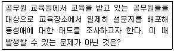
- 그 상황에 응답을 왜곡시킬 가능성이 있다.
- 설문지 문항에 대한 이해에 혼란이 있을 수 있다.
- 조사결과가 이용될 것이라고 인식될 수 있다.
- 응답자들에 대한 통제가 용이하지 않다.
(정답률: 48%)
18. 다음 중 면접조사의 특징이 아닌 것은?
- 우편조사에 비해 응답률이 높다.
- 보다 신뢰성이 있는 대답을 얻어낼 수 있다.
- 응답자와 그 주변상황들을 직접 관찰할 수 있다.
- 응답자에게 높은 익명성을 제공한다.
(정답률: 76%)
19. 간절질문의 종류로 정확한 응답에 대한 장애요인을 피하여 피조사자에게 자극을 줌으로써 우회적으로 응답을 얻어내는 방법은?
- 투사법
- 오류선택법
- 정보검사법
- 토의완성법
(정답률: 62%)
20. 다음 중 사전검사의 주된 목적은?
- 응답자의 분포를 확인한다.
- 질문들이 갖고 있는 문제들을 파악한다.
- 본 조사의 결과와 비교할 수 있는 자료를 얻는다.
- 조사원들을 훈련한다.
(정답률: 69%)
21. 다음 중 연구의 모형에 관한 설명으로 옳은 것은?
- 연역적 방법은 탐색적 연구에, 귀납적 방법은 가설검정에 주로 사용한다.
- 연역적 방법은 우선 관찰을 통해 자료를 수집하고 이를 정리‧분석하여 일반적인 유형을 찾아내고 이것으로부터 잠정적인 결론에 도달하는 것이다.
- 귀납적 방법은 이론으로부터 가설을 설정하고 가설의 내용을 현실세게에서 관찰한 다음, 관찰에서 얻는 자료가 어느 정도 가설에 부합되는가를 판단하여 가설의 채택여부를 결정짓는 방법이다.
- 실제 연구과정에서는 연역적 방법과 귀납적 방법이 엄밀히 구분된다기보다는 상호보완적인 하나의 고리를 이루고 있다.
(정답률: 64%)
22. 해결 가능한 연구 문제가 되기 위한 조건이 아닌 것은?
- 기존의 이론 체계와 관련이 있어야 한다.
- 연구현상이 실증적으로 검증가능해야 한다.
- 연구문제가 관찰 가능한 현상과 밀접히 연결되어야 한다.
- 연구대상이 되는 현상에 대한 명확한 규정이 되어야 한다.
(정답률: 42%)
23. 온라인 사회조사의 특성이 아닌 것은?
- 조사대상자를 도사에 응하게 만드는 유인요소가 있어야 한다.
- 중복응답의 가능성을 전혀 배제할 수 없다는 단점이 있다.
- 방법으로는 전자우편조사, 웹조사, 다운로드조사의 3가지가 대표적 유형이다.
- 조사대상자에 따라 가입자조사, 회원조사, 방문자조사로 구분할 수 있다.
(정답률: 45%)
24. 면접조사시 비교적 인지수준이 낮은 응답자들은 면접자의 생각이나 지시에 무조건 동조하게 될 가능성이 높은 것은 어떤 효과 때문인가?
- 1차 정보 효과
- 응답순서 효과
- 동조 효과
- 최근정보 효과
(정답률: 72%)
25. 과학적 연구과정상 연구주제의 설정 후 조사설계를 위해 필요한 것은?
- 직관
- 검증
- 가설
- 실험
(정답률: 64%)
26. 다음 중 질문지 작성의 원칙이 아닌 것은?
- 명확성
- 부연설명
- 가치중립성
- 규범적 응답의 억제
(정답률: 50%)
27. 다음 중 폐쇄형 응답식 설문조사에서 응답을 얻기 위해 사용하는 방식이 아닌 것은?
- 척도형
- 선택형
- 서열형
- 논술형
(정답률: 64%)
28. 집단조사를 실시할 때 일반적으로 유의해야 할 사항이 아닌 것은?
- 응답자들에 대한 통제가 용이한다.
- 조사기관으로부터 협력을 얻어야 한다.
- 집단상황이 응답을 왜곡시킬 가능성이 있다
- 집단조사를 승인해준 당국에 의해 조사결과가 이용될 것이라고 인식될 가능성이 있다.
(정답률: 55%)
29. 응답률과 독촉서한의 효과에 대한 설명으로 틀린 것은?
- 우편조사에서 조사결과의 신빙성을 향상시키기 위해서는 응답을 하지 않는 응답자들에게 독촉서한을 보내어 가능한 한 응답률을 높이는 것이 바람직하다.
- 곧바로 응답을 보내지 않는 조사대상자들의 상당수가 무성의한 응답자일 가능성이 많아, 독촉서한이 응답률을 높일 수 있는지는 모르나 조사의 전반적인 질을 높이는 데는 별다른 효과가 없을 수도 있다.
- 독촉서한을 보내게 되면 바로 응답을 제때에 하지 않는 사람들이 누구인가를 공개하는 결과가 되어 이들의 신원이 밝혀지게 되는 만큼, 독촉서한을 받으면 받을수록 응답을 하지 않으려는 생각을 강화시키는 역작용을 하게 될 위험성이 크다.
- 독촉서한을 받은 응답자들은 상당수가 응답은 하되 중요한 질문항목을 빠뜨리고 응답하거나, 전체 질문 항목의 절반 이상은 아예 응답하지 않은 채 질문지를 회송하게 되는 경우가 발생한다.
(정답률: 25%)
30. 통제집단 사후측정 실험설계가 통제집단 사전사후측정 실험설계보다 좋은 점은?
- 무작위 추출과 관련된 문제를 피할 수 있다.
- 무작위 할당과 관련된 문제를 피할 수 있다.
- 측정반응성과 관련된 문제를 피할 수 있다.
- 무작위 추출 및 무작위 할당과 관련된 문제를 모두 피할 수 있다.
(정답률: 48%)
2과목: 조사방법론 II
31. 표집구간 내에서 첫 번째 번호만 무작위롤 뽑고 다음부터는 매 k번째 요소를 표본으로 선정하는 표집방법은?
- 단순무작위 표집
- 계통표집
- 층화표집
- 집락표집
(정답률: 73%)
32. 다음 중 전수조사와 가장 관계가 깊은 것은?
- 사전조사
- 인구주택총조사
- 집단조사
- 사후조사
(정답률: 70%)
33. 확률표집에 대한 설명으로 틀린 것은?
- 확률표집의 기본이 되는 것은 단순무작위표집이다.
- 확률표집에서는 모집단의 모든 요소가 뽑힐 확률이 “0”이 아닌 확률을 가진다는 것을 전제한다.
- 확률표집은 항상 불완전한 것이어서 표본으로부터 모집단의 특성을 추론하는데 제약이 있기 마련이다.
- 확률표집의 종류로 할당표집이 있다.
(정답률: 56%)
34. 반분시험지의 상관계수가 0.5일 때 스피어만-브라운 보정방법에 의해 전체 시험지의 신뢰도계수는?
- 0.75
- 0.67
- 0.50
- 0.27
(정답률: 30%)
35. 서스톤 척도를 구성하는 순서가 올바르게 나열된 것은?
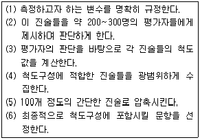
- (1)-(4)-(5)-(2)-(3)-(6)
- (1)-(5)-(2)-(4)-(3)-(6)
- (1)-(4)-(2)-(5)-(3)-(6)
- (1)-(4)-(2)-(3)-(5)-(6)
(정답률: 43%)
36. 다음 중 표집틀을 평가하는 주요 요소가 아닌 것은?
- 포괄성
- 추출확률
- 효율성
- 안정성
(정답률: 50%)
37. 다음 중 단순무작위표집을 통하여 자료를 수집하기 여러운 조사는?
- 신용카드 이용자의 불편사항
- 조세제도 개혁에 대한 중산층의 찬반 태도
- 새 입시제도에 대한 고등학생의 찬반 태도
- 동 주민센터 행정서비스에 대한 거주민의 만족도
(정답률: 40%)
38. 다단계 집락표집에 대한 설명으로 틀린 것은?
- 최초의 집락수가 많으면 그 이후의 집락수는 작아진다.
- 표본의 대표성을 높이기 위해서는 최초의 집락수를 작게 하는 것이 좋다.
- 다단계집락표집을 할 때 층화표집을 병행하는 것은 표본의 대표성을 높이기 위한 한 방법이다.
- 규모비례확률표집(PPS)은 다단계집락표집에 속한다.
(정답률: 58%)
39. 사회과학연구에서 같은 개념을 반복 측정하였을 때 같은 측정값을 얻게 될 가능성을 무엇이라 하는가?
- 신뢰성
- 타당성
- 정확성
- 효과성
(정답률: 70%)
40. 다음 ( )에 각각 알맞은 것은?
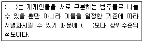
- 명목척도-서열척도
- 등간척도-비율척도
- 명목척도-비율척도
- 서열척도-명목척도
(정답률: 70%)
41. 여성근로자를 대상으로 하는 사회조사에서 변수가 될 수 없는 것은?
- 성별
- 연령
- 직업종류
- 근무시간
(정답률: 81%)
42. 다음 중 표본의 크기가 같다고 했을 때 표집오차가 가장 작은 표집방법은?
- 층화표집
- 단순무작위표집
- 집락표집
- 계통표집
(정답률: 57%)
43. 다음 중 리커트 척도를 관한 설명으로 틀린 것은?
- 평정척도의 하나이다.
- 태도를 나타내는 여러 개의 진술문들로 구성된다.
- 응답자들에게 태도 점수를 부여한다.
- 하나의 척도를 가지고 여러 가지 개념에 대한 태도를 측정할 수 있다는 장점이 있다.
(정답률: 50%)
44. 외적 타당도에 영향을 미치는 요인은?
- 자료수집과정에서 관심을 가지는 독립변수 이외의 다른 사건이 영향을 미칠 수 있다.
- 연구의 대상인 개인, 집단, 지역공동체 등의 자체 내 조건의 변화가 발생할 수 있다.
- 조사결과에 나타난 차이가 측정도구, 표집단위의 불안정성으로 인해 발생할 수 있다.
- 표집과정에서 특정한 속성의 집단이 차별적으로 선별되어 대표성의 문제가 발생한다.
(정답률: 33%)
45. 총 학생수가 2,000원인 학교에서 500명을 표집할 때의 표집률은?
- 25%
- 40%
- 80%
- 100%
(정답률: 65%)
46. 리커트척도에서 문항들이 단일차원을 이루는지를 확인할 수 있는 방법은?
- 재생계수 계산
- 구조방정식 모형
- 회귀분석
- 요인분석
(정답률: 45%)
47. “나는 TOEFL 성적은 별로 좋지 않지만 영어는 잘한다”라는 주장은 통계적 방법론에서 TOEFL이 영어 실력을 측정하는 데 어떤 면에서 문제가 있는가?
- 내용타당성
- 구성타당성
- 예측타당성
- 신뢰성
(정답률: 40%)
48. 문항 상호간에 어느 정도 일관성을 가지고 있는가를 측정하는 방법으로 크론바하 알파값을 산출하는 방법은?
- 재조사법
- 복수양식법(또는 평행양식법)
- 반분법
- 내적일관성법
(정답률: 68%)
49. 어느 교사가 50문항으로 구성된 독해력을 측정하기 위한 질문지를 만들었다. 자료수집 후 확인해 본 결과 10개의 문항은 독해력이 아닌 어휘력을 측정하는 것으로 나타났다. 따라서 이 10개의 문항을 제외하고 40문항으로 질문지를 재구성했다. 이 교사는 어떤 결과를 기대할 수 있겠는가?
- 신뢰도를 저하시키고 타당도를 증가시킬 것이다.
- 신뢰도를 증가시키고 타당도를 저하시킬 것이다.
- 신뢰도와 타당도 모두를 증가시킬 것이다.
- 신뢰도와 타당도 모두를 저하시킬 것이다.
(정답률: 49%)
50. 서스톤 척도는 어떤 척도 수준에 해당하는가?
- 명목척도
- 등간척도
- 비율척도
- 서열척도
(정답률: 50%)
51. 중소기업 사장들의 중국계 외국인 노동자에 대한 친숙도를 조사하려고 한다. 어떤 척도법을 사용하는 것이 좋은가?
- 소시오메트리
- 평정척도법
- 보가더스 척도법
- Q-기법
(정답률: 40%)
52. 다음 중 비율척도로 측정할 수 없는 변수는?
- 인구 증가율
- TV시청률
- 일일 인터넷 이용시간
- 평균학점(GPA)
(정답률: 57%)
53. 다음 중 크론바하의 알파값에 대한 설명으로 틀린 것은?
- 표준화된 크론바하의 알파값은 0에서 1까지 이르는 값으로 존재한다.
- 문항 간의 평균상관계수가 높을수록 크론바하의 알파값도 커진다.
- 문항의 수가 적을수록 크론바하의 알파값은 커진다.
- 크론바하의 알파값이 클수록 신뢰도가 높다고 인정된다.
(정답률: 62%)
54. 일주일의 시간 간격을 두고 동일한 문제지를 가지고 같은 반 학생들을 대상으로 EQ 검사를 두 차례 실시하였더니 그 결과가 매우 상이하게 나타났다. 이 문제지가 가지는 문제점은?
- 타당성
- 예측성
- 대표성
- 신뢰성
(정답률: 66%)
55. 다음 중 사회조사에서 측정의 의미로 옳은 것은?
- 측정이란 사물이나 사건 등의 속성에 수치를 부과하는 것이다.
- 객관적으로 파악될 수 없는 태도변수는 측정이 불가능 하다.
- 반복해서 측정하여도 동일한 결과를 얻을 수 없다는 가정을 전제한다.
- 측정하고자 하는 개념이 연구자에 따라 정의가 달라질 수 없다.
(정답률: 66%)
56. 동일한 개념에 대해서 한 시점과 또 다른 시점에서 각각 측정하여 이들 간에 어느 정도로 높은 상관이 있는가를 보고 신뢰도를 평가하는 방법은?
- 내적일관성법
- 재조사법
- 반분법
- 복수양식법(또는 평행양식법)
(정답률: 65%)
57. 거트만척도에서 응답자의 응답이 이상적인 패턴에 얼마나 가까운가를 측정하는 것은?
- 단일차원계수
- 스캘로그램
- 재생가능계수
- 최소오차계수
(정답률: 48%)
58. 사회과학에서 척도를 구성하는 이유가 아닌 것은?
- 측정의 신뢰성을 높여준다.
- 변수에 대한 질적인 측정치를 제공한다.
- 하나의 지표로 측정하기 어려운 복합적인 개념들을 측정한다.
- 여러 개의 지표를 하나의 점수로 나타내어 자료의 복잡성을 덜어준다.
(정답률: 37%)
59. 의미분화 척도법에 대한 설명으로 틀린 것은?
- 주로 특정 대상(사물이나 인간)에 대한 응답자의 느낌을 측정하기 위해 사용된다.
- 여러 쌍의 대칭적 형용사를 사용함으로써, 다차원적인 측정이 가능하다.
- 사용이 간편하고 응답자가 신속히 응답할 수 있는 장점을 가지고 있다.
- 다른 척도법과는 달리, 진정한 의미에서 등간수준에서의 측정이 가능하다.
(정답률: 50%)
60. 어떤 제품의 선호도를 조사하기 위해 “아주 좋아한다, 좋아한다, 싫어한다, 아주 싫어한다”와 같은 보기를 사용하였다. 이는 어떤 척도로 측정된 것인가?
- 서열척도
- 명목척도
- 등간척도
- 비율척도
(정답률: 65%)
3과목: 사회통계
61. 다음의 가상의 자료를 이용하여 단순선형회귀모형을 추정하면?
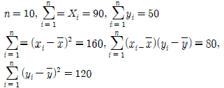
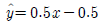
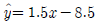
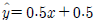
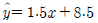
(정답률: 50%)
62. 독립시행수가 10이고 성공확률이 0.5인 이항분포에서 1번의 성공이 발생할 확률 A와 10번의 성공이 발생할 확률 B사이의 관계는?
- A<B
- A=B
- A>B
- A+B=1
(정답률: 45%)
63. 정규분포를 따르는 모집단에서 모평균의 신뢰구간에 관한 설명 중 틀린 것은?
- 신뢰수준이 높을수록 신뢰구간 폭은 넓어진다.
- 표본수가 증가할수록 신뢰구간 폭은 넓어진다.
- 모분산을 아는 경우는 정규분포를, 모르는 경우는 t분포를 이용하여 신뢰구간을 구한다.
- 95% 신뢰구간이라 함은 모평균이 하한과 상한 사이에 있을 확률이 95%라는 것을 의미한다.
(정답률: 53%)
64. 다음 중 Type Ⅰ 오류가 발생하는 경우는?
- 진실이 아닌 귀무가설(H0)을 기각하지 않았을 경우
- 진실인 귀무가설(H0)을 기각하지 않았을 경우
- 진실이 아닌 귀무가설(H0)을 기각하게 될 경우
- 진실인 귀무가설(H0)을 기각하게 될 경우
(정답률: 67%)
65. 자료분석결과 비대칭도가 0보다 큰 경우 자료의 분표는 다음 중 어디에 해당하는가?
- 왼쪽꼬리분포(부의 비대칭)
- 오른쪽꼬리분포(정의 비대칭)
- 뽀쪽한 집중경향
- 완만한 분산경향
(정답률: 49%)
66. 어느 학급 30명의 학생 중 가정에 PC를 보유하고 있는 학생이 20명, 보유하고 있지 않은 학생이 10명 있는 경우, 전체 학생 중 5명을 비복원 랜덤추출하여 PC를 보유하고 있는 학생수를 확률변수 X라고 정의하면 확률변수 X의 분포는?
- 이항분포
- 초기하분포
- 포아송분포
- 정규분포
(정답률: 22%)
67. 한 회사에서 생산되는 제품이 불량품일 확률은 서로 독립적으로 0.01임을 안다. 그 회사는 한 상자에 10개씩 포장해서 판매를 하는데, 만약 한 상자에 불량품이 2개 이상이면 돈을 환불해준다. 판매된 상자가 반품될 비율은?
- 약 0.6%
- 약 0.4%
- 약 0.2%
- 약 0.08%
(정답률: 31%)
68. 일원배치법에서 각 처리에 대한 반복수가 같은 경우에 처리에 대한 모집단 모형은
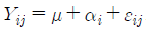
와 같다. 이모형에 대한 가정으로 올바르지 않은 것은?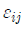
는 정규분포를 따른다.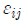
의 기댓값은 1이다.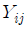
의 기댓값은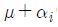
이다.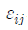
의 분산은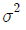
(정답률: 56%)
69. 정규분포와 표준정규분포에 대한 설명으로 틀린 것은?
- 정규분포의 평균의 값이 0일 경우 표준정규분포의 평균의 값은 0이 아니다.
- 정규분포에서 평균에서 우측으로 표준편차만큼 떨어진 면적은 전체의 34.13%이다.
- 정규분포에서 평균과 표준편차의 값은 정규분포곡선의 위치와 모양을 결정한다.
- 표준정규분포의 횡축에 표시되는 값은 표준화된 표준편 차의 수치를 의미한다.
(정답률: 54%)
70. 다음 중 그 성질이 다른 것과 구별되는 것은?
- 분산
- 범위
- 변이(변동)계수
- 상관계수
(정답률: 46%)
71. 다음의 요약된 자료로부터 성별과 안경착용 여부, 두 변수의 독립성을 검정하기 위한 카이제곱 통계량의 값은?
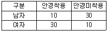
- 40
- 30
- 20
- 10
(정답률: 59%)
72. 어떤 동전이 공정한지 알기 위하여 A씨는 100번 던져서 60번 앞면이 나왔기 때문에 앞면이 나올 확률을 0.6이라고 추정하였고, B씨는 200번 던져서 90번 앞면이 나왔기 때문에 앞면이 나올 확률을 0.45라고 추정하였다. 이 동전의 앞면이 나올 확률의 추정치는?
- 0.525
- 0.45
- 0.6
- 0.5
(정답률: 49%)
73. 이 공장에서 만든 나사못 중 400개를 임의로 뽑았을 때 불량품 개수 X의 표본분포의 평균과 표준편차는?
- 평균 : 30, 표준편차 : 6
- 평균 : 40, 표준편차 : 36
- 평균 : 30, 표준편차 : 36
- 평균 : 40, 표준편차 : 6
(정답률: 44%)
74. 도수분포가 비대칭이고 극단치들이 있을 때보다 적절한 중심성향 척도는?
- 산술평균
- 중위수
- 최빈수
- 조화평균
(정답률: 65%)
75. K라는 양궁선수는 화살을 쏘았을 때 과녁의 중심에 맞출 확률이 0.6이라고 한다. 이 선수가 총 7번의 화살을 쏜다면 과녁의 중심에 평균 몇 회 맞추는가?
- 6.00
- 8.57
- 1.68
- 4.20
(정답률: 60%)
76. 다음의 단순선형회귀모형에 대한 설명으로 틀린 것은?
- 각
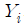
의 기댓값은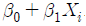
로 주어진다. - 오차인
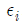
와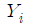
는 동일한 분산을 갖는다. 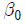
는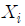
가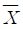
일 경우 Y의 평균 반응량을 나타낸다.- 모든
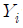
들은 상호독립적으로 측정된다.
(정답률: 34%)
77. 어떤 비행기가 추락하였고 추락한 지역은 3개의 가능지역이 있다고 하자. 이때
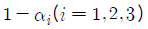
를 비행기가 사실상 i 지역에 있을 때, i 지역에서 발견할 확률이라고 하자. 이때 지역 1에서 찾지 못했다는 조건에서 비행기가 1번째 지역에 있었을 확률은?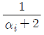
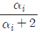
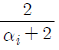
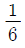
(정답률: 40%)
78. 다음 중 상관분석의 적용을 위해 산점도에서 관찰해야 하는 자료의 특징이 아닌 것은?
- 선형 또는 비선령 관계의 여부
- 이상점의 존재 여부
- 자료의 총화 여부
- 원점(0,0)의 통과 여부
(정답률: 56%)
79. 평균의 차이가 큰 두 집단의 산포를 비교하고자 한다. 가장 적당한 측도는?
- 분산
- 범위
- 변동계수
- 사분위범위
(정답률: 49%)
80. 통계학 기말시험에서 00대학의 1학년 학생의 평균은 60점 그리고 표준편차는 17점이었으며, ΔΔ대학의 1학년 학생의 평균의 65점 그리고 표준편차는 13점이었다. 00대학의 A학생이 71점을 받았고, ΔΔ대학의 B학생이 79점을 받았다면, 어떤 학생이 상대적으로 더 좋은 점수를 받았다고 할 수 있는가?
- A학생
- B학생
- A와 B학생의 점수는 동일하다.
- A와 B학생의 점수는 구별할 수 없다.
(정답률: 63%)
81. 어떤 시스템은 각각 독립적으로 작동하는 n개의 성분으로 구성되어 있다. 이 시스템은 그 성분 중, 반 이상 작동을 하면 효과적으로 작동을 한다. 각 성분의 작동확률을 p라고 하면 5개의 성분으로 구성된 시스템이 3개의 성분으로 구성된 시스템보다 더 효과적으로 작동을 하기 위한 p값의 조건은?
- p > 1/5
- p > 1/4
- p > 1/3
- p > 1/2
(정답률: 34%)
82. 확률변수 X가 평균이 3이고 분산이 5인 정규분포 N(3,5)를 따른다고 할 때, 5X+3의 분포는?
- N(3,25)
- N(18,125)
- N(18,5)
- N(15,125)
(정답률: 52%)
83. 동일 신뢰수준에서 모비율 θ 에 대한 신뢰구간의 길이를 절반으로 줄이기 위하여는 표본크기를 몇 배로 하여야 하는가?
- 루트 2
- 2배
- 4배
- 1/4
(정답률: 58%)
84. 초기하분포와 이항분포의 설명으로 틀린 것은?
- 초기하분포는 통상적으로 유한의 모집단으로부터 복원 추출을 전제로 한다.
- 이항분포는 베르누이 시행을 전제로 한다.
- 초기하분포는 모집단의 크기가 충분히 큰 경우 이항분포로 근사될 수 있다.
- 이항분포는 적절한 조건하에서 정규분포로 근사될 수 있다.
(정답률: 43%)
85. 모분산의 추정량으로써
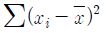
을 n으로 나눈 것보다는 (n-1)로 나눈 것을 사용한다. 그 이유는 좋은 추정량을 만족하는 조건 중 특히 어느 것과 관계있는가?- 불편성
- 유효성
- 충분성
- 일치성
(정답률: 54%)
86. 통계조사시 한 가구를 조사하는데 소요되는 시간을 측정하기 위하여 64가구를 임의추출하여 조사한 결과 평균 소요시간이 30분, 표준편차 5분이었다. 전체가구를 조사하는데 소요되는 평균시간에 대한 95%의 신뢰구간은 얼마인가?(단, Z0.025=1.96, Z0.⑤ =1.645)
- 28.8, 31.2
- 28.4, 31.6
- 29.0, 31.0
- 28.5, 31.5
(정답률: 52%)
87. 다음 중 중심위치를 나타내는 측도가 아닌 것은?
- 산술평균
- 표준편차
- 중위수
- 최빈수
(정답률: 53%)
88. 다음의 대표치 중 산술평균보다 이상점 자료에 덜 민감한 대표치들로 짝지은 것은?
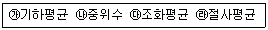
- ㉮, ㉯
- ㉮, ㉰
- ㉯, ㉰
- ㉯, ㉱
(정답률: 39%)
89. 분산분석을 수행하는데 필요한 가정이 아닌 것은?
- 독립성
- 불편성
- 정규성
- 등분산성
(정답률: 53%)
90. 유의확률(p-value)의 설명으로 틀린 것은?
- 검정통계량이 실제 관측된 값보다 대립가설을 지지하는 방향으로 더욱 치우칠 확률로서 귀무가설 H0 하에서 계산된 값이다.
- 주어진 데이터와는 직접적으로 관계가 없다.
- 유의확률이 작을수록 H0 에 대한 반증이 강한 것을 의미한다.
- 귀무가설 H0 에 대한 반응의 강도에 대하여 기준값을 미리 정해놓고 p-값을 그 기준값과 비교한다.
(정답률: 64%)
91. 행이 2, 열리 3으로 된 이원교차표를 보고 카이제곱 검증을 하려고 한다. 자유도는 얼마인가?
- 1
- 2
- 3
- 4
(정답률: 62%)
92. 아래 표본에 대하여 중심 측도로서 가장 적합한 것은?
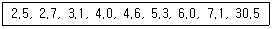
- 4.6
- 4.63
- 7.1
- 7.31
(정답률: 65%)
93. 두 확률변수 X, Y는 서로 독립적이며 표준정규분포를 갖는다. 이 때 U=X+Y, V=X-Y로 정의하면 두 확률변수 U, V는 각각 어떤 분포를 따르게 되는가?
- U, V 두 변수 모두 N(0, 2)를 따른다.
- U~N(0, 2)를 V~N(0, 1)를 따른다.
- U~N(0, 1)를 V~N(0, 2)를 따른다.
- U, V 두 변수 모두 N(0, 1)를 따른다.
(정답률: 43%)
94. 사과무게의 평균은 100g이고, 분산은 64g, 배 무게의 평균은 100g이고, 분산은 25g인 정규분포를 따른다고 한다. 지금 120g의 사과와 배가 각각 하나씩 있다고 할 때, 이 사과와 배의 상대적 무게 관계는?
- 배와 사과의 상대적인 무게는 같다.
- 사과가 배보다 상대적으로 무겁다.
- 배가 사과보다 상대적으로 무겁다.
- 비교할 수 없다.
(정답률: 60%)
95. 다음 중 관할치가 산포된 정도를 상대적으로 비교하는데 이용될 수 없는 것은?
- 변이계수(변이도)
- 사분위편차계수(사분위편차)
- 신뢰계수(신뢰도)
- 평균편차계수(평균편차)
(정답률: 62%)
96. 피어슨의 상관계수 값이 취하는 값의 영역은?
- 0에서 1사이
- -1에서 0사이
- -1에서 1사이
- -∞에서 +∞사이
(정답률: 63%)
97. 중회귀분석에서 회귀제곱합(SSR)이 150이고, 오차제곱합(SSE)이 50인 경우, 결정계수는?
- 0.25
- 0.3
- 0.75
- 1.1
(정답률: 48%)
98. 크기가 10인 표본으로부터 얻은 회귀방정식은 y=2+0.3x 이고, x의 표본평균이 2이고, 표본분산은 4, y의 표본평균은 2.6이고, 표본분산은 9이다. 이 요약치로부터 x와 y의 상관계수는?
- 0.1
- 0.2
- 0.3
- 0.4
(정답률: 35%)
99. 변수 x 의 평균을
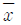
, 표준편차를 s 라고 할 때, 평균이 0 이고, 분산이 1이 되는 표준화점수를 구하는 방법은?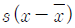
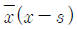
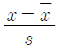
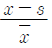
(정답률: 66%)
100. 네 개의 독립변수로 이루어진 회귀분석모델의 적합성을 검증한 결과 적합하다는 판단이 내려졌다고 할 때, 다음 설명 중 맞는 것은?
- 최소한 한 개의 회귀계수는 통계적으로 유의하다.
- 최소한 두 개의 회귀계수가 통계적으로 유의하다.
- 최소한 세 개의 회귀게수가 통계적으로 유의하다.
- 네 개의 회귀계수 모두 통계적으로 유의하다.
(정답률: 46%)